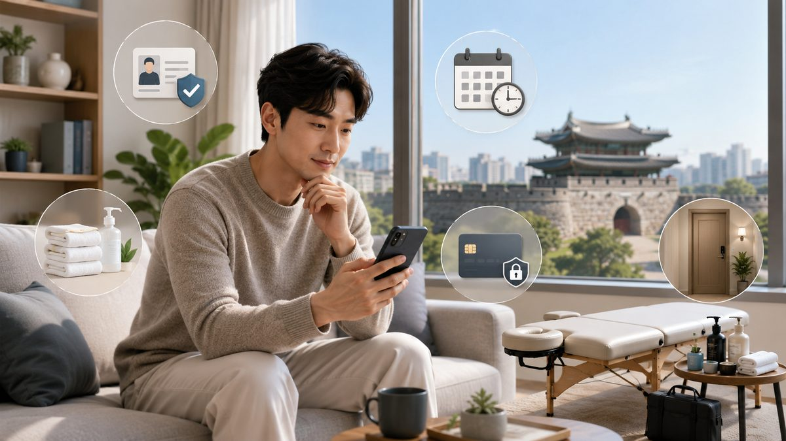

수원은 인구 120만이 넘는 경기 최대 도시로, 인계동 번화가·수원역 상권·영통 업무지구·권선/구운동 주거지가 한 도시 안에 섞여 있습니다. 그래서 ‘수원’이라고만 하기보다 어느 생활권인지 알려주시는 것이, 출장마사지 배정과 도착을 가장 빠르게 합니다. 67 마사지가 수원 권역에서 쌓은 운영 경험을 토대로 정리했습니다.
수원 도심은 회식·약속이 늦게까지 이어져 평일 저녁부터 자정 무렵 예약이 집중됩니다. 원하는 시간이 분명하다면 미리 예약할수록 원하는 관리사·시간을 잡기 쉽습니다. 심야·새벽도 24시간 가능하지만, 늦은 시간일수록 미리 알려주시는 편이 안정적입니다.
인계동·수원역 일대는 시간대별 정체와 주차 제약이 있어, 출발 시 도착 예정 시간을 먼저 안내드립니다. 광교·영통 신축 단지는 단지명과 동·출입구를, 오피스텔은 공동현관 출입 방법을 함께 주시면 헤매지 않고 정확히 도착합니다.
처음이거나 가볍게 풀고 싶다면 60·90분 스웨디시·아로마가 무난합니다. 영통·광교의 좌식 직장인은 목·어깨·등을 깊게 푸는 90·120분 전신 만족도가 높습니다. 회식 뒤 무거운 날은 강한 압보다 약압 아로마가 안전합니다.
수원처럼 생활권이 뚜렷한 도시는, 정보 한두 가지만 더 주셔도 도착과 만족도가 확연히 달라집니다. 67 마사지는 수원 전역을 단일 정찰 권역으로 운영하며, 권역 내 별도 출장비 없이 동일 금액으로 방문합니다.
같은 수원이라도 인계동의 밤과 광교의 밤은 분위기가 다릅니다. 인계동·수원역은 늦게까지 사람이 많아 도착 동선을 미리 잡는 것이 좋고, 영통·광교·망포의 신축 단지는 동·출입구 정보가 도착 속도를 좌우합니다. 권선·구운동·세류 같은 주거지는 늦은 밤 조용한 방문을 원칙으로 합니다.
수원 도심은 자정 이후에도 예약이 들어오는 지역입니다. 늦은 시간일수록 미리 예약해 두면 원하는 관리사와 시간을 잡기 쉽습니다. 심야 방문 시에는 공동현관 출입 방법과 정확한 호수를 미리 공유해 주시면, 늦은 시간에도 매끄럽게 도착할 수 있습니다.
퇴근이 늦은 직장인이 ‘이동 없이 집에서’ 받기 위해 부르는 경우가 가장 많습니다. 하루 종일 앉아 일한 뒤라 목·어깨·허리에 시간을 더 배분해 달라는 요청이 흔합니다. 이런 요청을 예약 때 미리 주시면, 한정된 시간을 불편한 곳에 집중할 수 있어 만족도가 높아집니다.
현장에서 수원 이용자에게 가장 흔한 조합은 ‘평일 밤 + 90분 + 목·어깨·허리 집중’입니다. 종일 앉아 일한 직장인의 전형적인 패턴이죠. 주말에는 시간을 넉넉히 잡아 120분으로 전신을 푸는 분이 늘어납니다. 수원역 인근 숙소에 머무는 출장객은 도착 즉시 시작할 수 있도록 미리 샤워를 해두는 경우가 많아, 그만큼 관리 시간을 온전히 씁니다.